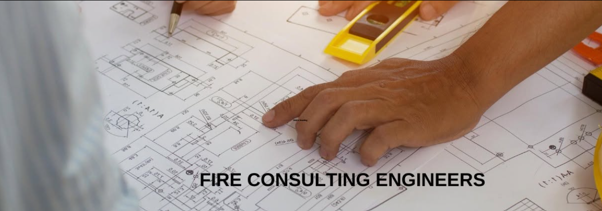
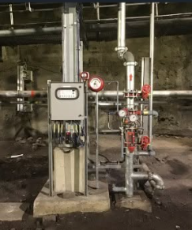
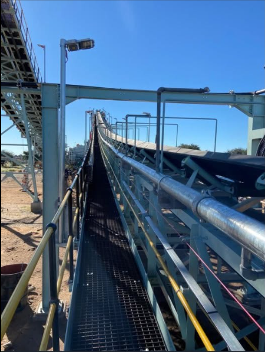
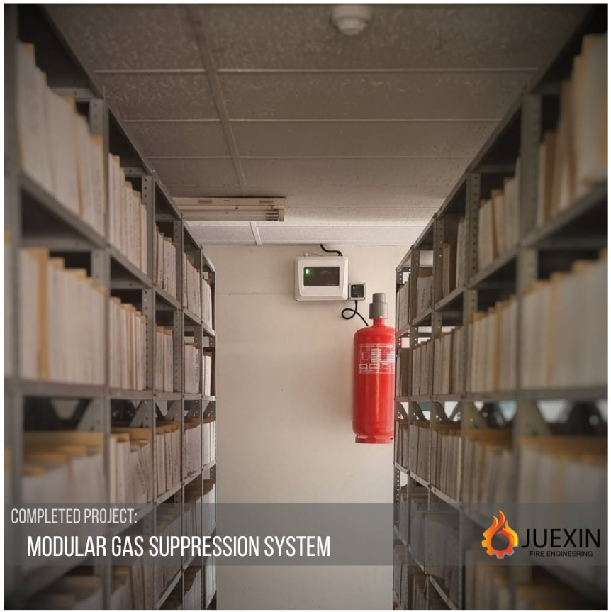
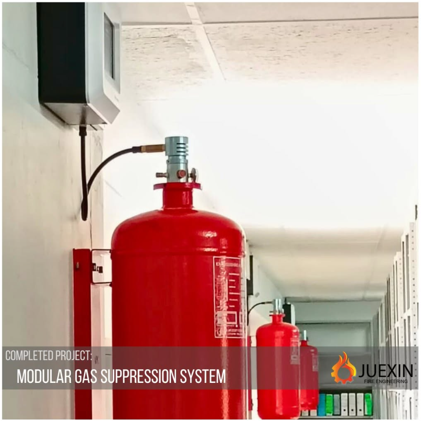

Commercial Developments
Fire strategies for offices, mixed-use developments, retail nodes and high-occupancy commercial buildings.
Industries
Juexin's consulting offer is suited to project teams and facilities that need a specialist technical partner rather than a generic contractor-style website experience.
Sectors served

Fire strategies for offices, mixed-use developments, retail nodes and high-occupancy commercial buildings.

Risk-led engineering for manufacturing, processing, warehouses and combustible-dust environments.

Fire safety support for high-risk mining and mineral-processing facilities, including operational continuity needs.

Practical fire safety planning for shopping centres, tenant layouts, refurbishments and operational environments.

Life-safety focused strategies for apartments, estates, mixed-use residential projects and occupancy planning.
Fire engineering support for hotels, lodges, event venues and public-facing facilities.
Technical guidance for civic, municipal, education, healthcare and public-use infrastructure projects.
Project-team support
Fire engineering decisions affect architecture, MEP design, cost, approvals, construction and operations. A clear process helps keep the project team aligned.
Evaluate the occupancy, hazards, fire load, evacuation needs and regulatory context.
Develop risk-informed strategies and test design logic using appropriate engineering methods.
Coordinate protection measures, documentation and rational design outputs with the project team.
Assist with technical clarity through approvals, implementation and future operational requirements.